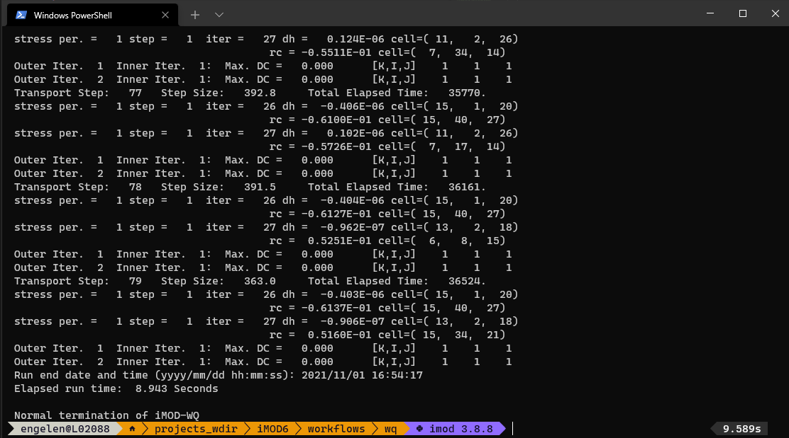
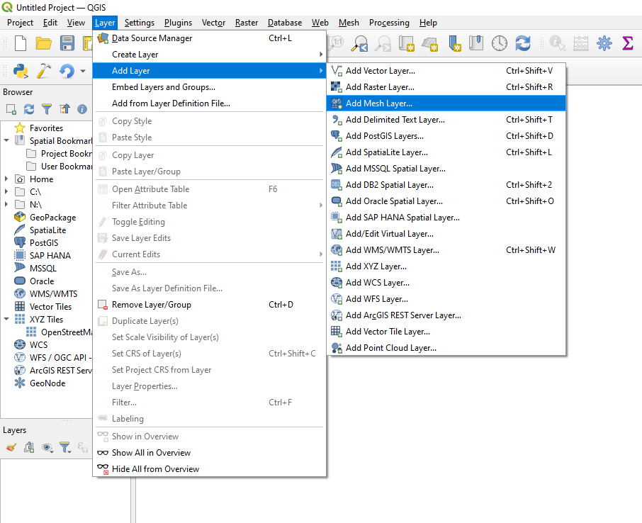
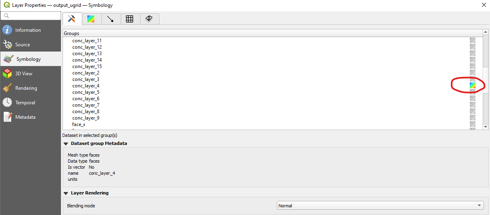
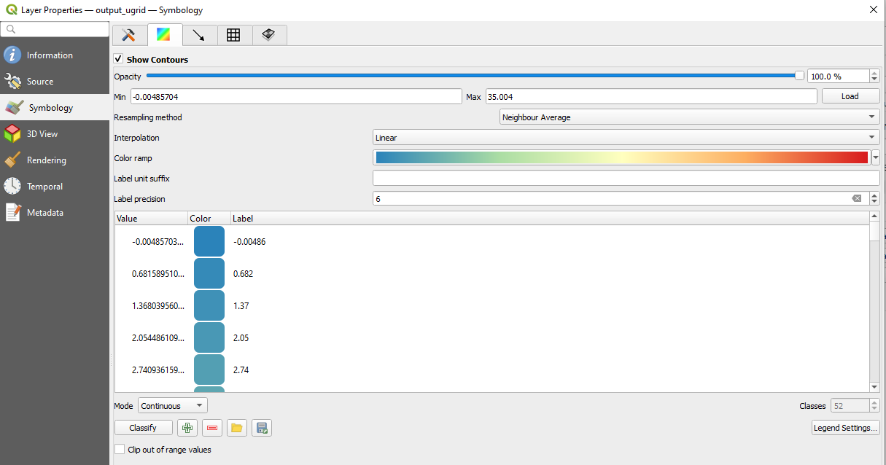
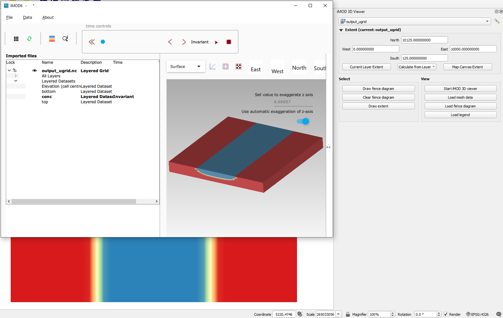

Conceptual fresh-salt model
Description
In this example we create an example fresh-salt groundwater model of a strip-shaped freshwater lens, which could be a very simple analogue of a barrier island.
The workflow consists of the following steps:
- Creating a model with an iMOD-python script
- Running the model in a terminal with iMOD-WQ
- Use iMOD-python to post-process the model output (IDF) to a data format supported by QGIS (UGRID)
- Viewing a cross-section in iMOD QGIS plugin
- Use the plugin to view the results in the iMOD 3D viewer
Creating a model
The iMOD-python script below creates a simple 3D iMOD-WQ model.
To install iMOD-python, see these instructions.
We define a middle strip which has fresh recharge (rch) applied, and the sides have a fixed concentration (bnd = -1) of 35 (sconc = 35.) in the top layer. This creates freshwater lens along the strip.
import numpy as np
import xarray as xr
import imod
# Discretization
nrow = 40 # number of rows
ncol = 40 # number of columns
nlay = 15 # number of layers
dz = 10
dx = 250
dy = -dx
x = np.arange(0.5 * dx, dx * ncol, dx)
y = np.arange(-dy * ncol, 0.5 * -dy, dy)
# setup ibound
bnd = xr.DataArray(
data=np.full((nlay, nrow, ncol), 1.0),
coords={
"y": y,
"x": x,
"layer": np.arange(1, 1 + nlay),
"dx": dx,
"dy": dy,
},
dims=("layer", "y", "x"),
)
# set constant heads
bnd[0, :, 0:12] = -1
bnd[0, :, 28:40] = -1
# set up tops and bottoms
top1D = xr.DataArray(
np.arange(nlay * dz, 0.0, -dz), {"layer": np.arange(1, nlay + 1)}, ("layer")
)
top3D = top1D * xr.full_like(bnd, 1.0)
bot = top3D - dz
# Defining the starting concentrations
sconc = xr.DataArray(
data=np.full((nlay, nrow, ncol), 35.0),
coords={
"y": y,
"x": x,
"layer": np.arange(1, nlay + 1),
"dx": dx,
"dy": dy,
},
dims=("layer", "y", "x"),
)
sconc[0, :, 13:27] = 0.0
# Defining the recharge rates
rch_rate = xr.DataArray(
data=np.full((nrow, ncol), 0.0),
coords={"y": y, "x": x, "dx": dx, "dy": dy},
dims=("y", "x"),
)
rch_rate[:, 13:27] = 0.001
rch_conc = xr.full_like(rch_rate, fill_value=0.0)
# Finally, we build the model.
m = imod.wq.SeawatModel("FreshwaterLens")
m["bas"] = imod.wq.BasicFlow(
ibound=bnd, top=top3D.sel(layer=1), bottom=bot, starting_head=0.0
)
m["lpf"] = imod.wq.LayerPropertyFlow(
k_horizontal=10.0, k_vertical=20.0, specific_storage=0.0
)
m["btn"] = imod.wq.BasicTransport(
icbund=bnd, starting_concentration=sconc, porosity=0.35
)
m["adv"] = imod.wq.AdvectionTVD(courant=1.0)
m["dsp"] = imod.wq.Dispersion(longitudinal=0.0, diffusion_coefficient=0.0)
m["vdf"] = imod.wq.VariableDensityFlow(density_concentration_slope=0.71)
m["rch"] = imod.wq.RechargeHighestActive(rate=rch_rate, concentration=0.0)
m["pcg"] = imod.wq.PreconditionedConjugateGradientSolver(
max_iter=150, inner_iter=30, hclose=0.0001, rclose=0.1, relax=0.98, damp=1.0
)
m["gcg"] = imod.wq.GeneralizedConjugateGradientSolver(
max_iter=150,
inner_iter=30,
cclose=1.0e-6,
preconditioner="mic",
lump_dispersion=True,
)
m["oc"] = imod.wq.OutputControl(save_head_idf=True, save_concentration_idf=True)
m.time_discretization(times=["1900-01-01T00:00", "2000-01-01T00:00"])
# Now we write the model, including runfile:
m.write("FreshwaterLens")
# You can run the model using the command prompt and the iMOD-WQ executableRunning the model
This model requires the iMOD-WQ kernel, which is part of iMOD 5 and which you can download for free here after registering. It usually takes only a few minutes before a link is sent.
Open a terminal (cmd.exe is fine, but the cool kids use Powershell and call the following lines of code:
./path/to/iMOD-WQ.exe ./FreshwaterLens.runThis will run the iMOD-WQ model, and should not take more than 10 seconds.

Convert output data
iMOD-WQ writes IDF files, a data format used in iMOD 5, which not many other software packages support. Therefore iMOD-python allows for reading these IDF files and converting them to other data formats in Python.
In this example we convert the output to a UGRID file, which can be read by QGIS.
import imod
import numpy as np
import xarray as xr
# We assume that this script is located in the same directory
# as in create_wq_input.py.
# We provide a UNIX style global path
# to select all IDF files in the conc directory.
conc_path = "./results/conc/*.IDF"
bottom_path = "./FreshwaterLens/bas/bottom*.idf"
top_path = "./FreshwaterLens/bas/top.idf"
# Open the IDF files.
conc = imod.idf.open(conc_path).compute()
bottom = imod.idf.open(bottom_path).compute()
surface = imod.idf.open(top_path).compute()
# Reconstruct vertical discretization
# We need this as IDFs do not store vertical discretization
surface = surface.assign_coords(layer=1)
## Create 3D array of tops
### Roll bottom one layer downward: the bottom of a layer is top of next layer
top = bottom.roll(layer=1, roll_coords=False)
### Remove layer 1
top = top.sel(layer=slice(2, None))
### Add surface as layer 1
top = xr.concat([surface, top], dim="layer")
### Reorder dimensions
top = top.transpose("layer", "y", "x")
# Merge into dataset
ds = xr.merge([conc, top, bottom])
# Create MDAL supported UGRID
# NOTE: This requires iMOD-python v1.0(?)
ds_ugrid = imod.util.to_ugrid2d(ds)
#%% Due to a bug in MDAL, we have to encode the times as floats
# instead of integers
# until this is fixed: https://github.com/lutraconsulting/MDAL/issues/348
ds_ugrid["time"].encoding["dtype"] = np.float64
ds_ugrid.to_netcdf("./results/output_ugrid.nc")Viewing the results in QGIS
Start QGIS and open the ./results/output_ugrid.nc file as a mesh.

You can select the variable to plot on the map canvas by right-clicking the output_ugrid layer in the Layers panel, and then navigating to: Properties > Symbology
Next select which variable to plot in the group selection screen by clicking the color ramp next to the variable name, which will render the variable on the map canvas.

Colormaps can be set by navigating to the color selection menu

Next, open the iMOD plugin's cross-section tool and draw a cross-section by clicking from Map and right-clicking to stop drawing. Then select conc as variable to be plotted, and click Add. Next click Plot.
By default the tool will plot with a green to blue gradient called Viridis, but we can change the gradient by clicking the dataset's gradient box under symbology in the table.
This opens up a color dialog, where we can select the color ramp. Clicking the small arrow next to the color gradient box in the dialog will allow selecting presets. We chose "Spectral" and also select "Invert Color Ramp" in the examples, but you can select whatever colormap you think is suitable!

Viewing the results in the iMOD 3D Viewer
As a final step we will look at the results in the iMOD 3D Viewer. Click the 3D viewer symbol in QGIS, which will open up the 3D viewer widget of the iMOD plugin.
First, click the Draw Extent button to draw an extent to be plotted. This can be very useful for large datasets, to only look at a smaller zone of the data.
Second, click Start iMOD 3D viewer to start the iMOD 3D viewer. Third, click Load mesh data to load the mesh you selected in the QGIS widget to be opened in the 3D viewer.
Fourth, to plot the data, under the Imported files, expand the data selection tree, and under Layered datasets, selecting conc.
Finally, you can migrate the colormap you used in QGIS by clicking Load legend.

Concluding
In short, we wrote model input with iMOD-python, ran a model with iMOD-WQ, converted its output to UGRID with iMOD-python, and viewed the results in QGIS and the iMOD 3D viewer.